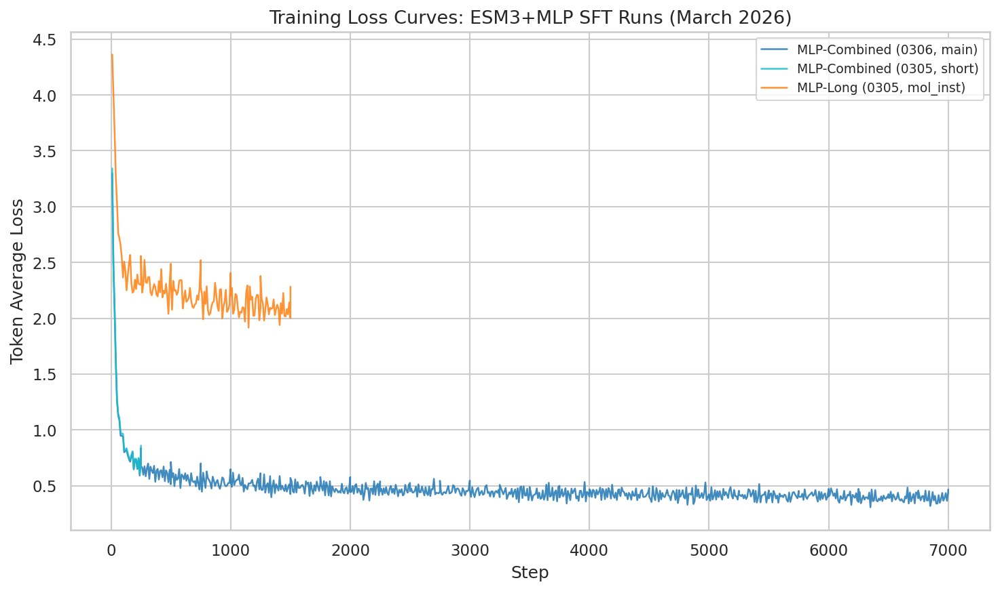
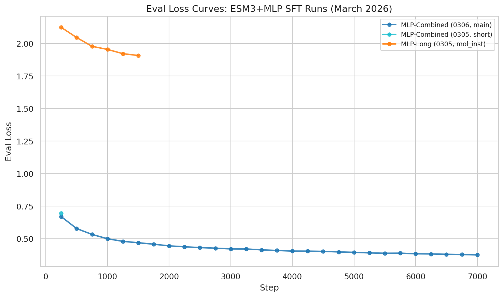
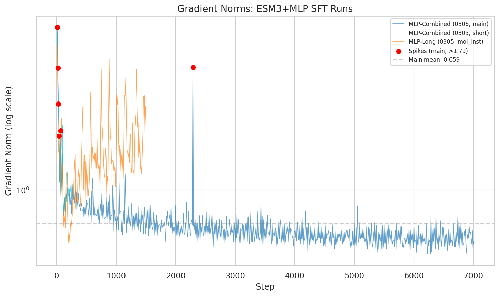
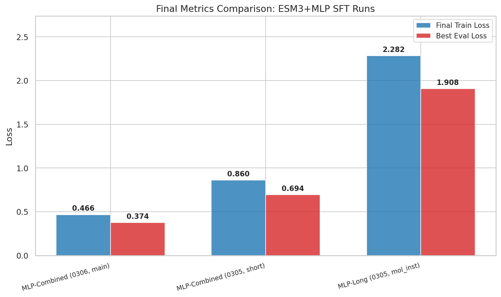
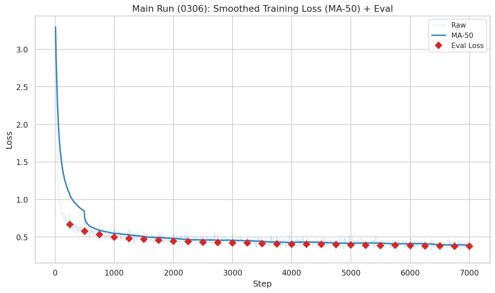
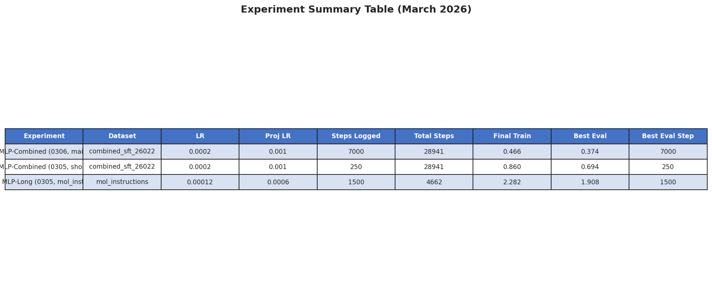
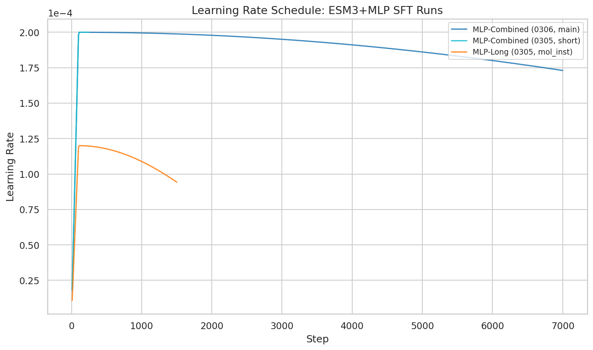

Question: How are the ESM-3 MLP combined SFT runs progressing on the 4.89M-sample dataset, and what do the training dynamics reveal?
Experiments analyzed: 12 total runs found; 3 with sufficient trainer state for analysis.
The main MLP-Combined run (0306_010408) achieves a best eval_loss of 0.374 at step 7,000 — a 46.1% improvement over its predecessor short run (0.694 at step 250). The run is only 24.2% complete (7,000 / 28,941 steps) and eval loss is still improving, indicating significant remaining headroom. Gradient norms are stable (mean 0.66) with no concerning divergence. The mol-instructions-only comparison run confirms that the combined 4.89M dataset yields substantially lower loss (0.374 vs 1.908), validating the multi-source data strategy.
trainer_state.json files from experiment directoriestoken_avg_loss (true per-token average; NOT HF Trainer running average)eval_loss (validation set)| Parameter | MLP-Combined (0306, main) | MLP-Combined (0305, short) | MLP-Long (0305, mol_inst) |
|---|---|---|---|
| Approach | esm3 + mlp | esm3 + mlp | esm3 + mlp |
| Base model | Qwen3-8B-Instruct | Qwen3-8B-Instruct | Qwen3-8B-Instruct |
| Dataset | combined_sft_260225 (4.89M) | combined_sft_260225 (4.89M) | mol_instructions (~50K) |
| Learning rate | 2e-4 | 2e-4 | 1.2e-4 |
| Projector LR | 1e-3 | 1e-3 | 6e-4 |
| LR ratio (proj/base) | 5x | 5x | 5x |
| Total steps planned | 28,941 | 28,941 | 4,662 |
| Steps logged | 7,000 | 250 | 1,500 |
| Progress | 24.2% | 0.9% | 32.2% |
| Batch size | 16 | 16 | 16 |
| Max tokens/batch | 8,192 | 8,192 | 8,192 |
| Gradient accum steps | 4 | 4 | 4 |
| Max seq length | 2,048 | 2,048 | 2,048 |
| FSDP | Enabled (8x H100) | Enabled (8x H100) | Enabled (8x H100) |
9 additional combined runs were found but had no trainer state (crashed or stopped before logging). This suggests infrastructure iteration was needed before the main run stabilized.
The main run exhibits a sharp loss drop in the first 200 steps: token_avg_loss falls from ~3.3 to ~0.6 (82% reduction). After convergence at step ~210, loss continues to decrease gradually, reaching 0.466 at step 7,000. The minimum observed token_avg_loss is 0.307.

Eval loss tracks training loss closely, with best eval_loss of 0.374 recorded at step 7,000 — the most recent checkpoint. This is a strong signal that the model has not yet overfit and further training will likely yield additional gains.

Gradient norms for the main run are well-behaved: mean 0.66, with a single post-warmup spike at step 2,290 (max 7.60). This is a marked improvement over earlier 8B experiments which suffered NaN explosions due to unclipped multimodal gradients. The gradient clipping fix applied in earlier work is confirmed effective.

At comparable training progress (~25–32%), the combined-dataset run achieves 0.374 eval_loss vs 1.908 for the mol-instructions-only run — a 5.1x difference. While the runs differ in LR (2e-4 vs 1.2e-4) and dataset size (4.89M vs ~50K samples), the magnitude of the gap confirms the value of the multi-source combined dataset assembled on Feb 25.

The MA-50 smoothed training loss shows a clean exponential decay with no plateaus or oscillations. Eval checkpoints (marked as dots) consistently fall near or below the smoothed training curve, indicating good generalization throughout.

| Metric | MLP-Combined (0306) | MLP-Combined (0305) | MLP-Long (mol_inst) |
|---|---|---|---|
| Final token_avg_loss | 0.466 | 0.860 | 2.282 |
| Min token_avg_loss | 0.307 | 0.604 | 1.916 |
| Best eval_loss | 0.374 | 0.694 | 1.908 |
| Best eval step | 7,000 | 250 | 1,500 |
| Convergence step | 210 | 210 | 160 |
| Mean grad norm | 0.66 | 1.57 | 1.67 |
| Max grad norm | 7.60 | 7.15 | 6.13 |
| Steps logged | 7,000 / 28,941 | 250 / 28,941 | 1,500 / 4,662 |

Warmup-period "anomalies" (steps 60–250): The analysis flagged 12 loss spikes and 2 gradient spikes in this window. These are expected — high loss during warmup is normal when training a randomly-initialized projector. They are not concerning.
Gradient spike at step 2,290: A single genuine gradient spike (max norm 7.60) occurred post-warmup in the main run. It was absorbed without loss divergence, confirming that the multimodal gradient clipping added in February is working as intended.
MLP-Long gradient spikes: Steps 750, 880, 1340 showed gradient spikes. The mol-instructions dataset may produce more variable batches due to smaller size and lack of diversity.

Data: analysis_summary.json | Plots: analysis_plots.py | Raw: run_histories.csv